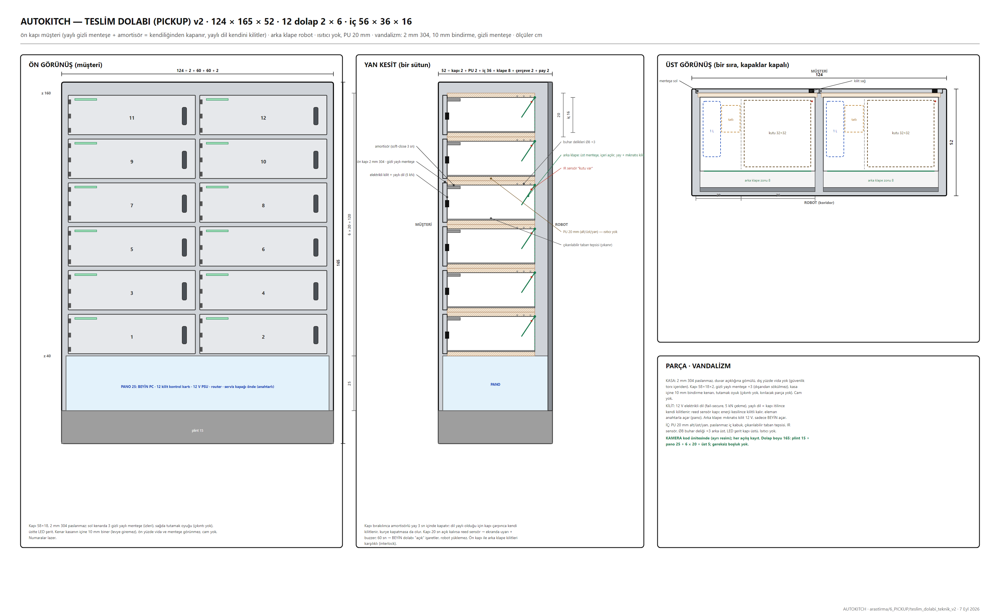

Cephede 12 dolap (2 × 6). Ön kapı müşteri: yaylı gizli menteşe + amortisör, kendiliğinden kapanır. Arka klape robot. Isıtıcı yok.

| Tedarikçi / ürün | Ne | Fiyat / durum |
|---|---|---|
| pudo · Easy Point · Kargopark · Zelfbox · Emanetmatik · Fitekno · kutu.tech | TR kargo dolabı (tek taraflı) | özel yapım için kilit kartı/kiosk |
| Apex OrderHQ Array · Hatco Minnow Pod | yurt dışı yemek dolabı (pass-through, ısıtmalı seçenek) | ithalat, pahalı |
| Öneri | kabin entegratörden + 12 × 12 V kilit + 16 kanal kilit kartı (KR-CU16) + IR | 60–90 bin TL |
| # | Problem | Durum | Çözüm / not |
|---|---|---|---|
| D1–D3 | sayı, boyut, arka kapak/ısıtıcı | ÖNERİ VAR | v2 |
| D4 | Platform kodu, kurye | ÖNERİ VAR | kod BEYİN üretir; entegratör API'de sipariş no doğrulanacak |
| D5 | Robot adresleme | ÖNERİ VAR | tablo + 12 sabit XYZ + IR |
| D7 | Kapak açık / çöp | AÇIK | sensör 20 sn, eleman haftalık |
| D10 | Kendiliğinden kapanma, vandalizm | ÖNERİ VAR | v2 kapı |